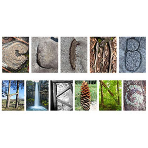

Tammie Helmick
Multimedia & Web Designer
Hello! My name is Tammie Helmick. I am currently a front end Web Developer at Florida Virtual School (FLVS). My primary work focus is developing courses for students in the K-12 education space. I also work with several Learning Management Systems (LMS) to implement the content and assessments for clients of FLVS. Previously, I was a Video and Motion Graphics Editor for a music promotion company. I've produced 200+ episodes of a television show called Monster Mix for MTV2.
Skills
- Web Design
- HTML
- CSS
- Javascript
- Selenium Automation
- Video Editing
- Motion Graphics
- Graphic Design
- Audio Editing
- DVD/Blu-ray Authoring
Software/Hardware
- Photoshop
- Illustrator
- After Effects
- Premier
- Final Cut Pro
- Avid Media Composer
- Motion
- Dreamweaver
Social Media/Web
Work Samples
Animated Show Intro
Still of an animated show intro, created in After Effects.

Volunteer Poster
Final Project for Design Fundamentals.

Unity Project
Design using repetition to create unity.
Typography Project
This piece uses photos from nature to create a word relevant to the photos used.

Logo Project
Final design after many iterations of designs.